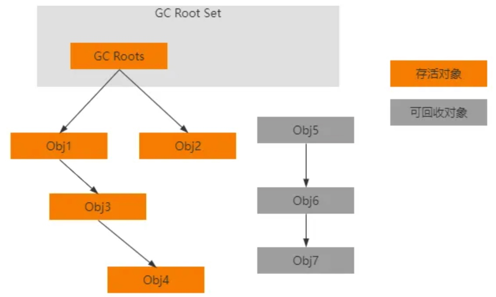
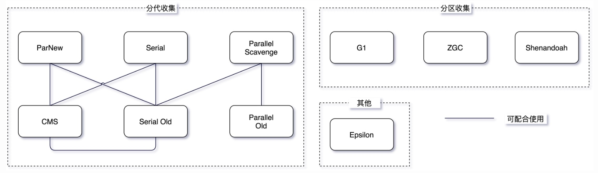
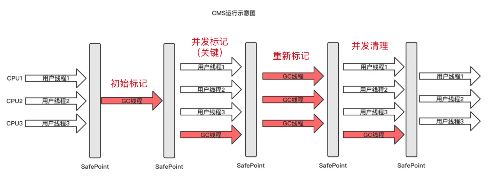
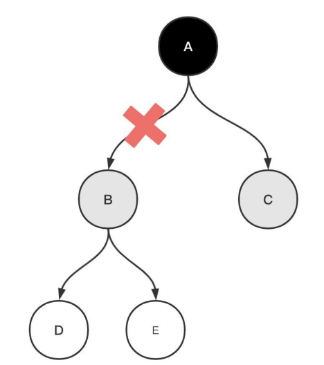
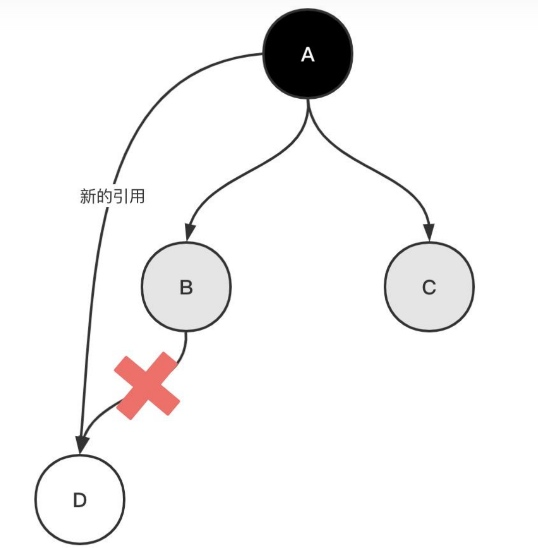
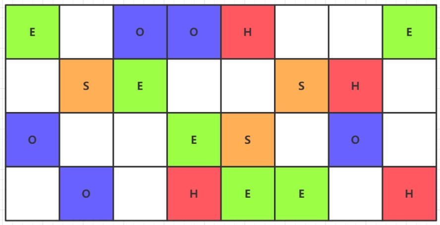
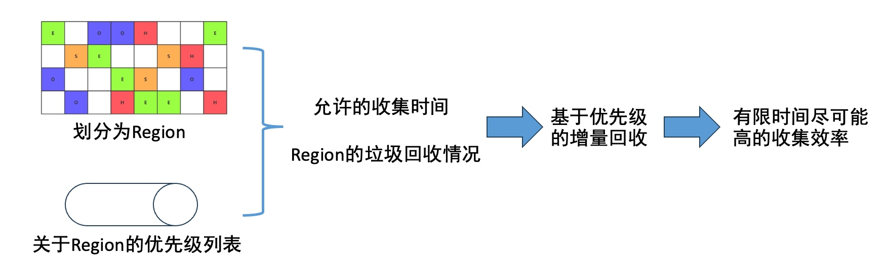
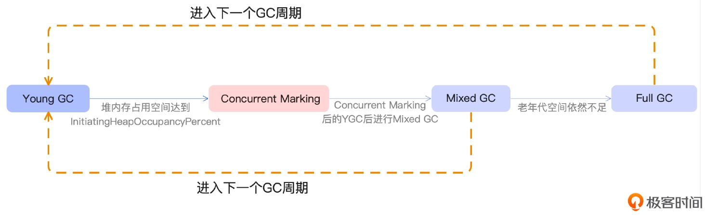
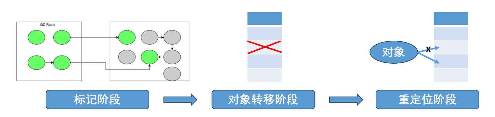

垃圾收集器
JVM垃圾收集器
JVM的垃圾回收机制一共分为两步：第一步先识别出不再使用的内存空间，第二步回收这些内存空间。
判断对象死亡的方式：
1、引用计数法 → 无法解决对象之间循环引用
2、可达性分析法

回收内存空间的方法：
1、标记-清除算法 → 产生内存碎片
2、复制算法（为了解决内存碎片问题：可用内存减少一半） → 对于存活时间久的对象需要频繁的复制，所以更适合存活时间短的新生代对象
3、标记-整理算法（整理开销大） → 更适合不需要频繁GC的老年代
4、分代收集算法：对堆内存分为新生代和老年代，应用不同的垃圾回收策略，提高回收效率。
介绍完这么多，终于可以引出今天的主题，也就是垃圾收集器。如果说垃圾回收算法是方法论，收集器就是依据方法论的具体实现。JVM垃圾收集器分为分代收集（CMS）和分区收集（G1、ZGC），下面就来一一介绍。

CMS
CMS(Concurrent Mark Sweep)垃圾收集器，从名字也可以看出它是基于标记-清除算法的并发收集器。它的最大特点是：以获取最短回收停顿时间(STW)为目标，所以说CMS非常适合在注重用户体验的应用当中使用。
CMS可以说是HotSpot中第一款真正意义的并发收集器——第一次实现了（一定程度）垃圾回收线程和用户线程的同时工作。
之所以CMS能够控制STW的控制，本质在于对可达性分析算法的改进——三色标记算法，以此实现垃圾回收线程和用户线程的并发执行，极大降低了系统响应时间。
CMS 垃圾回收过程

1、初始标记
短暂地 stop 其他线程，只标记 GC Roots 引用；
2、并发标记（CMS极大降低GC停顿的原因）
引用链扫描，但无法保证可达性分析结果可靠；
因为用户线程可能更新引用域，GC 线程无法保证对这些引用的可达分析实时性，故可能导致漏标和多标。
3、重新标记
stop 其他线程，对并发标记做出的可达性分析进行校正；
这个阶段的停顿时间一般会比初始标记阶段的时间稍长，远远比并发标记阶段时间短。
4、并发清除
GC 线程对未标记的内存空间区域清扫。
CMS 特点总结
优点：并发收集、GC停顿低；
但缺点也很明显：
① 标记-清除算法本身带来的内存碎片问题；
② 对 CPU 资源敏感，在 CPU 核数低时占用大，没有考虑吞吐量问题；
这里的吞吐量指 CPU运行代码时间 / CPU总消耗时间，是衡量 GC 对 CPU 利用率的指标。
③ 无法处理浮动垃圾。
浮动垃圾：在 CMS 回收过程中应用还在产生垃圾，这些垃圾只能在下次 GC 中回收。
尽管 CMS 从未被 JDK 当作默认的垃圾收集器，并且在 JDK9 标记为过时，JDK14 正式移除，但是它开创了 GC 并发收集的先河。
前面都是一些为了应对面试而复习的八股，下面的一些内容才是我想写这篇博客的初衷。
CMS 和 G1 是如何做到并发标记的
三色标记算法
CMS 将对象分为三种颜色：
1、黑色：扫描完它以及全部引用的对象；
2、灰色（中间状态）：扫描过对象本身、但还没有扫描完它全部引用的对象；
3、白色：还没扫描过的对象。
标记的过程大致为：
1、开始时，所有对象都为白色，未扫描状态；
2、将 GC Roots 直接关联的对象设为灰色；
3、遍历灰色对象所用引用——对象本身设为黑色、其引用都设为灰色；
4、重复步骤3，直到没有灰色对象；
5、结束时，黑色对象存活，白色对象回收。
上面的三色标记看起来也没什么了不起，当遇到其他用户线程并发改变对象引用关系时，也会产生错误。请耐心一点继续往下看。
多标
有一种情况是：假设 GC 线程已经在遍历 B，但此时用户线程执行了A.B == null切断了 A→B 的引用：如果可以按照最新的可达性分析 B、D、E 对象都可以被回收了，但由于 B 已经是灰色，它仍然会被当做存活对象继续遍历。「结果是」 B、D、E 变成浮动垃圾，只有下一次 GC 才能回收。

漏标
另外一种情况是：仍然假设 GC 线程已经遍历到 B 了，而此时用户线程执行了：
1 | B.D == null; |
GC 线程继续工作，由于此时 B 不可达 D，而可达 D 的 A 已经变为黑色，所以 D 最终会被标记为白色，当作垃圾清理。「结果是」本不应该回收的对象被垃圾回收，造成程序崩溃。

正像前面说的那样，三色标记法会在用户线程并发时造成存活对象的多标和漏标，多标问题会产生浮动垃圾在下一次 GC 清理就好了，相对来说还没那么严重，但是漏标会将本应存活的对象当作垃圾回收内存，导致程序崩溃。
经上面的流程我们很容易分析得到，漏标的发生必须同时满足如下两个条件：
1、有至少一个黑色对象在被标记后又指向了一个白色对象；
2、所有灰色对象在自己引用扫描完成之前，删除了对白色对象的引用；
换言之，我们只需要破坏以上任意一个条件，就可以避免漏标情况发生。由此引出的两个解决方案：CMS 采用的「增量更新」、G1 采用的「原始快照」。
增量更新
CMS 采用的是增量更新方法，即破坏第一个条件：有至少一个黑色对象被标记后又指向了一个白色对象。
既然黑色对象在指向白色对象后，自己又不可被重新遍历，那我们可以顺势将黑色对象的引用记录下来，在后续「重新标记」阶段再以该黑色对象为根对其引用重新扫描。
这种方式的缺点是需要耗费一定时间重新扫描这些黑色对象，不过真正发生引用变化的黑色对象往往还是少数。
原始快照
G1 采用的是原始快照方法，即破坏第二个条件：所有灰色对象在自己引用扫描完成之前，删除了对白色对象的引用。
既然灰色对象在扫描引用的过程中对白色对象的引用被删除，那我们可以顺势将灰色对象引用的白色对象的引用记录下来，在后续「重新标记」阶段再以白色对象为根对其引用重新扫描。
这种方式的缺点是会产生浮动垃圾。因为当用户线程取消引用时可能是真的需要将对应的白色对象回收，这时候重新标记时以白色对象为根会把本该回收的对象复活。不过对于这种浮动垃圾的问题是可以接受的，下一次 GC 回收就好了。
有些文章中会将三色标记中两种解决漏标问题的方案称为「基于写屏障」的bulabula，这里的写屏障可不是 JUC 中对内存的写屏障，而是类似于 AOP 的一种附加操作，也就是记录引用的过程。
G1
G1(Garbage-First)垃圾收集器，它是一款面向服务器（针对多核 CPU 和大内存）的垃圾收集器，它最大的特点是：在满足 GC 停顿时间要求的同时，还具备着极高的吞吐量。
根据经验，在大部分的大型内存(6G以上)服务器上，无论是吞吐量还是 STW时间，G1 的性能都是要优于 CMS。
G1 作为 JDK9 以来默认的垃圾收集器，有以下优势：
- 并行与并发：充分利用多核优势缩短 GC 停顿时间，并且仍然可以像 CMS 那样通过并发的方式在某些时刻让 Java 程序继续运行；
- 分代收集：尽管 G1 属于分区收集器，但它分区的依据仍然保留了分代的概念；
 - 空间整合：解决 CMS 标记-清除中内存碎片的问题，采用标记-整理算法实现的垃圾收集器；
- 可预测的停顿：这是 G1 相比于 CMS 的很重要的优势，G1 在追求低停顿的同时通过可以预测的 STW 预测模型，让使用者明确指定在 M 毫秒的时间片内，垃圾收集消耗的时间不超过 N 毫秒。
G1 的原理：

G1 垃圾回收过程
1、初始标记
2、并发标记（CMS 采用增量更新、G1 采用原始快照）
3、最终标记
4、筛选回收（局部上是复制算法，全局上是整理算法）
选择回收价值高的 Region，复制存活对象到新区域，回收旧区域内存。
G1 中三种 GC 模式

ZGC
ZGC(The Z Garbage Collector)垃圾收集器，它是一款面向于超大内存、低延迟的垃圾收集器，它的设计目标是：在不超过 10ms 的停顿时间下，支持 TB 级别内存容量；ZGC 能够支持 TB 级内存的原因是它的 GC 停顿时间不会随着堆大小或者活跃对象的大小而增加。
G1 在 YoungGC 和 MixedGC 中都采用了复制算法：

对象转移阶段，把活跃对象复制到新的内存地址上；重定位阶段，因为转移导致对象地址发生了变化，在重定位阶段，所有指向对象旧地址的引用都要调整到对象新的地址上。
G1 在复制时对象转移阶段和重定位阶段要处理所有存活的对象，并且对象转移阶段将对象转移到新地址上是 STW 的，G1 的性能瓶颈就在这。ZGC 对复制算法进行优化，在标记、对象转移、重定位三个阶段（几乎）都是并发的，这也是 ZGC 停顿时间小于 10ms 的关键。
ZGC 是如何将对象复制阶段实现并发的
ZGC 是通过「指针染色」 + 「读屏障」使得所有线程在并发条件下就指针的颜色（状态）达成一致，来实现并发的复制对象，从而大大降低 GC 停顿。
指针染色
在一个指针中除了有储存指向对象实际内存的地址之外，还可以存储对象的一些元数据信息，比如：对象是否被移动了、对象是否存活、对象是否被锁定等状态信息。
读屏障
和前面说过的写屏障一样，是一种在程序运行时插入到对象访问操作前后的特殊检查。每当在 GC 线程或用户线程中一个对象被访问时（除GC Roots）：
- 检查指针染色
- 处理移动的对象：如果指针显示对象在垃圾回收过程中已经被移动到新的位置，读屏障将确保返回到对象的新位置
确保一致性：保证在并发移动对象时内存访问的一致性，从而减少 GC 停顿的需要。
正是采用指针染色+读屏障的方式，在访问对象时就能及时记录和处理引用关系的变化，这样 GC 就无需停顿来扫描除 GC Roots 之外的对象。由此也可以呼应 ZGC 的一个特点—— ZGC 的 GC 停顿不随着堆内存或者存活对象大小的增长而增长，因为 STW 停顿只和 GC Roots 有关。
参考文章
https://javabetter.cn/jvm/gc-collector.html
https://mp.weixin.qq.com/s/Ywj3XMws0IIK-kiUllN87Q
https://www.cnblogs.com/chanshuyi/p/head-first-of-triple-color-marking-algorithm.html
https://zhuanlan.zhihu.com/p/340530051